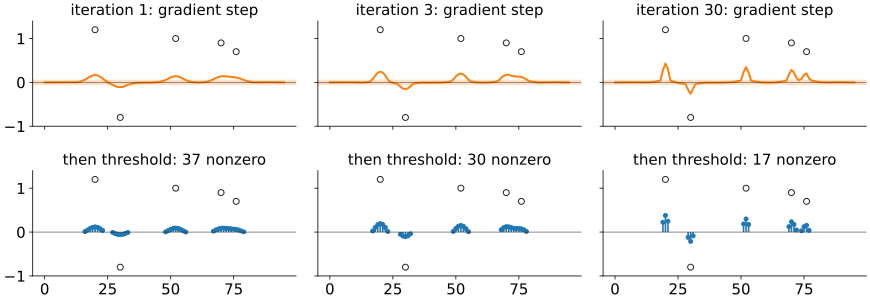
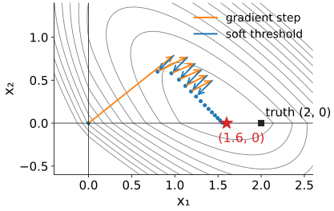
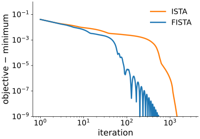
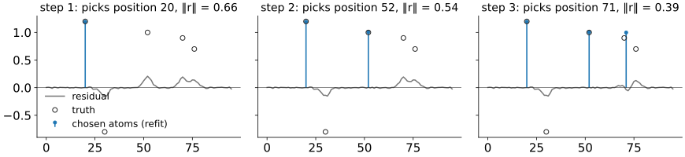
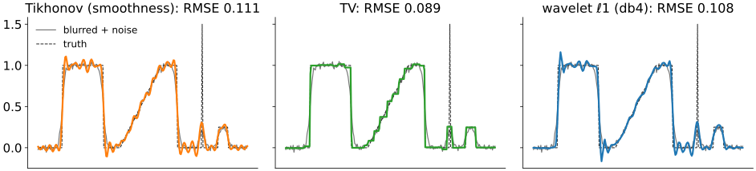
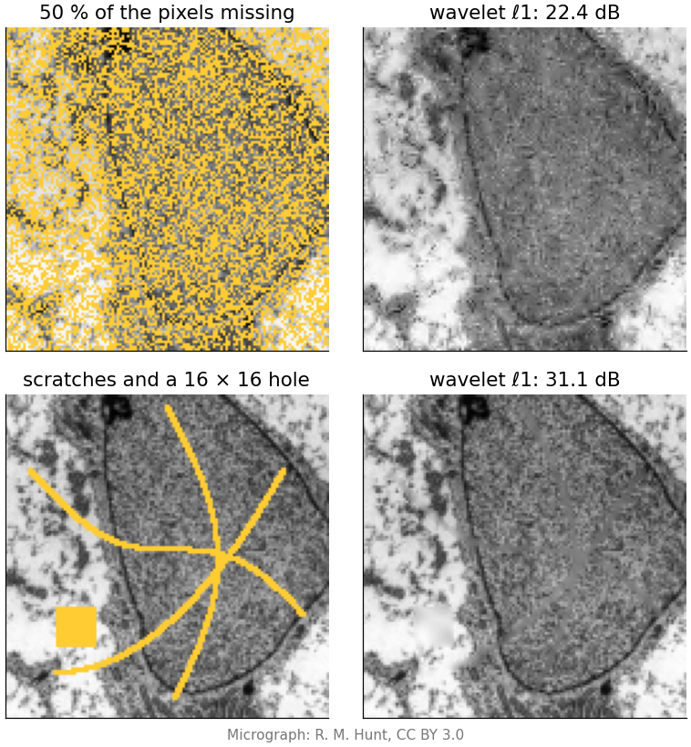
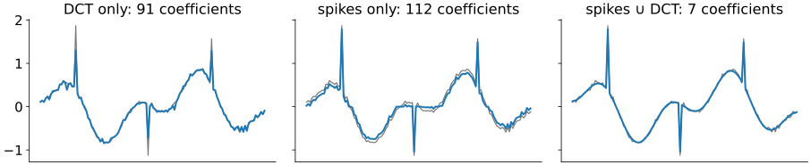

Solving with ℓ1: thresholding iterations and pursuit
Image analysis
About this lecture
In an orthonormal basis the ℓ1 problem has a one-line answer: soft-threshold every coefficient. Real problems blur, mask and undersample, and then it does not. Today: how to solve
\min_{\mathbf x}\ \tfrac12\|A\mathbf x - \mathbf y\|^2 + λ\|\mathbf x\|_1
for any forward operator A.
ISTA: a gradient step on the data, then a soft threshold. Repeat. FISTA: the same with momentum.
The same sparse signal (grey) seen through four forward operators:
identity with noise: denoising, thresholding is exact;
blur: deconvolution;
mask: missing samples, inpainting;
few Fourier coefficients: undersampling (next unit).
Write the image as \mathbf x = W\mathbf c with sparse coefficients \mathbf c (synthesis) and fold W into the operator: the unknowns are \mathbf c, the matrix is AW. Its columns are no longer orthonormal, so the coefficients interact.
Restoration = minimise misfit + λ·penalty; λ trades fidelity against prior; the discrepancy principle and the L-curve choose it. Nothing changes about choosing λ today.
Landweber iteration: a gradient step on the misfit, \mathbf x \leftarrow \mathbf x + τA^\top(\mathbf y - A\mathbf x): predict the data, compare, push the error back with A^\top.
New today: the penalty is ℓ1, which has a kink at 0. A gradient step alone cannot produce exact zeros, so we add one more operation.
ISTA in one sentence
“Fit a bit better, then make it simpler.” Take a Landweber step, then soft-threshold every coefficient at τλ. Repeat.

The gradient step spreads energy around (it is a blurred correction); the threshold removes everything inside the band ±τλ. Iteration by iteration the support shrinks towards the spikes.
By hand: two unknowns
A = \begin{pmatrix}1 & 0.5\\ 0.5 & 1\end{pmatrix}, \mathbf y = (2, 1) (the truth was (2, 0)), λ = 0.5, step τ = 0.4, start at 0.
k
gradient step \mathbf z = \mathbf x + τA^\top(\mathbf y - A\mathbf x)
threshold at τλ = 0.2
objective
1
(1.00, 0.80)
(0.80, 0.60)
1.105
2
(1.16, 0.78)
(0.96, 0.58)
1.053
3
(1.248, 0.706)
(1.048, 0.506)
1.022
…
∞
(1.6, 0)
0.900
ℓ1 finds the right support: x_2 = 0. The value 1.6 instead of 2 is the shrinkage bias of the last unit.
Ridge with the same λ: (1.15, 0.48), no zero.
Step size
Each step uses the gradient of the misfit. Too long a step overshoots, as in gradient descent for neural networks.
Safe: τ ≤ 1/L, where L is the largest gain of A^\top A (its largest eigenvalue). Then the objective never increases.
Above 2/L the iteration is unstable: errors along the strongest direction grow at every step (FISTA blows up quickly; in plain ISTA the threshold sometimes keeps it in check, but nothing guarantees it).
Examples: the by-hand matrix has L = 2.25, so τ ≤ 0.44 (τ = 0.4 above). A blur that keeps the mean has largest gain |H|^2 = 1 at frequency 0, so τ = 1. Keeping some Fourier coefficients or some pixels also has L = 1.
L of a general operator: a few iterations of the power method (\mathbf v \leftarrow A^\top A\mathbf v, normalise).
The math: the proximal operator
For a penalty g and a step τ, the proximal operator is the denoising problem \mathrm{prox}_{τg}(\mathbf v) = \arg\min_{\mathbf x}\ \tfrac12\|\mathbf x - \mathbf v\|^2 + τg(\mathbf x).
g = λ\|\cdot\|_1: it separates into scalars, each a soft threshold at τλ (shrinkage, sparsity unit).
g = the indicator of \mathbf x \ge 0 (0 if feasible, ∞ otherwise): clipping at 0.
g = \frac{λ}{2}\|\mathbf x\|^2: shrink by 1/(1 + τλ).
g = λ·TV: a TV denoiser (the Ising day’s TV denoising), computed by its own inner iteration.
The proximal gradient method alternates \mathbf z = \mathbf x + τA^\top(\mathbf y - A\mathbf x) and \mathbf x = \mathrm{prox}_{τg}(\mathbf z); ISTA is the case g = λ\|\cdot\|_1.
The math: ISTA minimises an upper bound
Let h(\mathbf x) = \tfrac12\|A\mathbf x - \mathbf y\|^2, \nabla h = A^\top(A\mathbf x - \mathbf y), and L \ge \|A\|^2. For any \mathbf x_k: h(\mathbf x) \le h(\mathbf x_k) + \nabla h(\mathbf x_k)^\top(\mathbf x - \mathbf x_k) + \tfrac L2\|\mathbf x - \mathbf x_k\|^2, with equality at \mathbf x = \mathbf x_k (the difference is \tfrac12(\mathbf x - \mathbf x_k)^\top(LI - A^\top A)(\mathbf x - \mathbf x_k) \ge 0).
Completing the square, bound + λ‖x‖₁ $= L2|x - (x_k - 1Lh)|^2 + λ|x|_1 + $ const: its minimiser is the soft threshold of the gradient step at λ/L. That is one ISTA step with τ = 1/L.
Minimising an upper bound that touches at \mathbf x_k cannot increase the objective (majorise–minimise).
A fixed point \mathbf x = \mathrm{soft}(\mathbf x + τA^\top\mathbf r, τλ) satisfies exactly the lasso optimality conditions of the last unit.
Soft thresholding is the “proximal step”
The two half-steps of the by-hand example in the plane (contours of the full objective):
orange: the gradient step ignores the penalty and moves downhill on the misfit;
blue: the threshold solves the penalty part exactly, and snapsx_2 to 0 once it is small enough.
The same split works for any penalty whose own “denoising step” is easy: non-negativity (clip at 0), TV (a TV denoiser), even a learned denoiser (dictionaries unit, diffusion priors).

FISTA: momentum
ISTA crawls when A is ill-conditioned (a blur): the gradient step is short in the directions that the blur damps.
FISTA (Beck & Teboulle 2009): take the next step from an extrapolated point, a bit beyond the current iterate in the direction it was moving.
Same cost per iteration (one A, one A^\top, one threshold).
Far fewer iterations: on the blurred spike signal, to reach the minimum within 10^{-6}: ISTA 993, FISTA 121.
Not monotone: the objective can wiggle on its way down.

The math: convergence rates
With f = h + λ\|\cdot\|_1, minimum f^\star at \mathbf x^\star, and τ = 1/L:
For 10⁻⁴ accuracy: about 10⁴ ISTA iterations against 10² FISTA iterations, if the constants are similar.
A greedy alternative: matching pursuit
Orthogonal matching pursuit (OMP) aims at ℓ0 directly, greedily:
Pick the atom (column) most correlated with the residual.
Refit all chosen atoms by least squares.
Update the residual; stop at K atoms or when the residual reaches the noise level.
By hand (A, \mathbf y as before): correlations \mathbf a_j^\top\mathbf y = 2.5 and 2 → atom 1; refit x_1 = 2; residual (0, 0). Done: (2, 0), exact, no shrinkage.
Fails when two atoms are similar: on the right, step 3 picks position 71, between the true spikes at 70 and 76, and never undoes it.

The math: OMP
At step k with support S (columns A_S):
Refit: \mathbf x_S = (A_S^\top A_S)^{-1}A_S^\top\mathbf y (normal equations on the support).
Then A_S^\top\mathbf r = 0: the residual is orthogonal to every chosen atom, so the same atom is never picked twice (unlike plain matching pursuit, which only subtracts the projection on the newest atom).
Guarantee (Tropp 2004): with unit-norm columns and mutual coherenceμ = \max_{i\ne j}|\mathbf a_i^\top\mathbf a_j|, OMP (and ℓ1) recover every K-sparse \mathbf x from A\mathbf x if K < \tfrac12(1 + 1/μ). Similar atoms mean large μ and small guaranteed K; this links to the next unit.
Try it: ISTA, FISTA and OMP
Deconvolution with a sparsity prior
Recall deconvolution: Tikhonov smooths, so steps blur and ring. A blurred, noisy profile (blur σ = 3, noise 0.02), each prior with its best λ:
prior
RMSE
none (blurred input)
0.126
Tikhonov (smoothness)
0.111
wavelet ℓ1 (db4)
0.108
TV
0.089
TV fits this mostly piecewise-constant profile best, but staircases the ramp.
No prior restores the spike to its height: the blur removed what no prior can bring back.
λ is chosen as in regularisation (here: by the true error, for comparison).

Inpainting is an inverse problem
The forward operator keeps the known pixels and drops the rest: A = a mask.
Least squares has no opinion about the missing pixels: they are the null space of A (recall ill-posed problems). Any value fits the data equally well.
A sparsity prior fills them with the sparsest continuation: ISTA alternates “put the known pixels back” with “threshold the wavelet coefficients”.
Works for scattered missing pixels and thin scratches. Fails for holes larger than the atoms: the 16 × 16 square on the right is filled with a smooth blur.
Patch dictionaries do better (dictionaries unit); classical diffusion and exemplar inpainting is in filling holes; diffusion-model priors fill large holes with plausible but invented content (diffusion priors).

Try it: restoring images with a sparsity prior
Redundant dictionaries
Some signals are sparse in no single basis: a few spikes plus a few slow cosines.
In the DCT, the spikes need many coefficients; in the pixel basis, the cosines do.
In the union of the two (256 atoms for 128 samples) the signal is 5 atoms. Coding is no longer a change of basis; ISTA or OMP choose the atoms.
On the right (ℓ1 with each dictionary, same λ): 91, 112 and 7 coefficients.
Image version: spots on a smooth background, or cartoon plus texture: separate them by coding in two dictionaries at once.

Summary
ℓ1 problems with any forward operator: ISTA = a gradient (Landweber) step on the data, then a soft threshold at τλ. The threshold is the proximal step of ℓ1; other penalties plug in their own (clip, TV).
Step τ ≤ 1/L (L = largest gain of A^\top A); FISTA adds momentum: same cost, far fewer iterations.
OMP: greedy atom selection with refit; no shrinkage bias, but it can commit to a wrong atom when atoms are similar.
Deconvolution and inpainting are the same problem with different A: a blur, a mask. A sparsity prior fills the null space with the sparsest continuation, which fails for holes larger than the atoms.
Redundant dictionaries make mixtures sparse.
Next: if a prior can fill missing pixels, can we measure fewer on purpose? Compressed sensing.